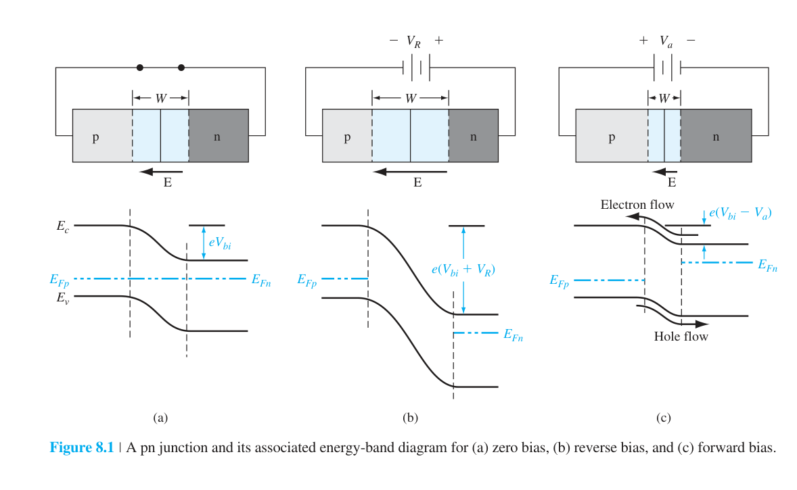
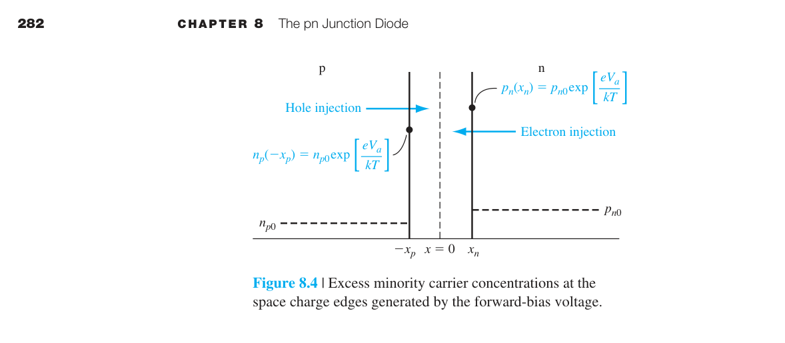
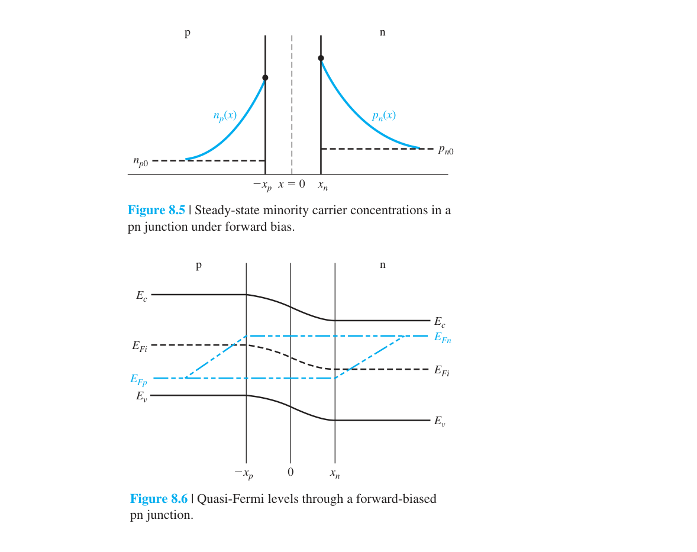
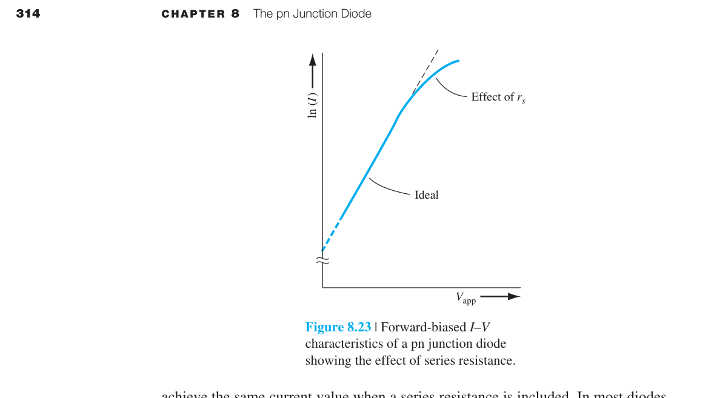
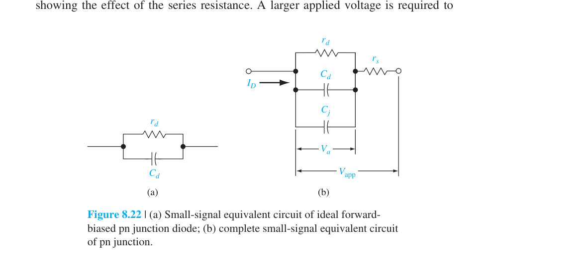
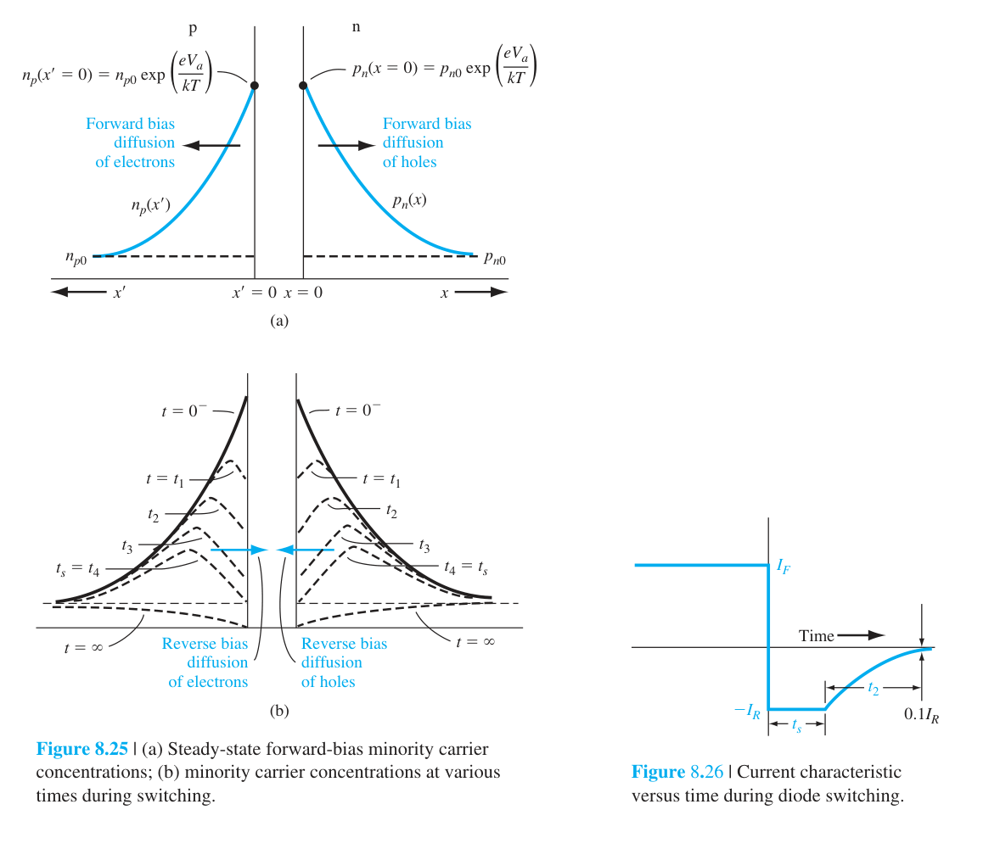
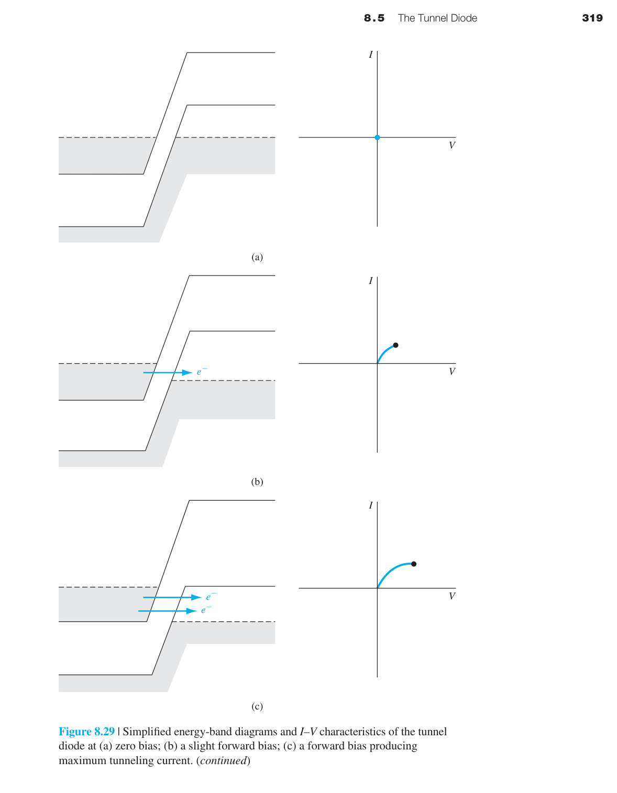

pn 接面二極體
The pn Junction Diode
8.0 本章預覽
本章要解決的核心問題
第七章告訴我們 pn 接面「長什麼樣子」——能帶彎曲、空乏區、內建電位。本章回答工程師最關心的問題：當外加電壓時，pn 接面中有多少電流流動？答案就是半導體物理中最著名的公式——Shockley 理想二極體方程：$I = I_S(e^{eV_a/kT}-1)$。
本章的推導邏輯極其清晰，每一步都建立在前幾章的堅實基礎上：外加電壓→準 Fermi 能階分離（第六章）→少數載子邊界濃度改變（Shockley 邊界條件）→少數載子擴散進入中性區（第五章擴散方程）→擴散電流（第五章）→總電流。將所有前面學到的工具串聯起來，得到一個極其簡潔的結果。
在此基礎上，我們加入非理想效應、頻率響應與反向恢復暫態，建立從理想 pn 接面物理走向真實元件行為的橋樑。
學習目標
- 由 Shockley 邊界條件推導理想 pn 二極體電流。
- 分辨擴散、產生復合、高階注入與串聯電阻主導的操作區。
- 建立小訊號模型並判斷接面電容與擴散電容何者主導。
- 用儲存電荷解釋反向恢復，並用能帶重疊解釋負微分電阻。
應熟悉少數載子擴散與連續性方程（Ch5–6）、準 Fermi 能階（§6.4），以及 pn 接面的內建電位、空乏區與偏壓效應（Ch7）。
關鍵概念
- Shockley 邊界條件：偏壓以指數方式改變空乏區邊緣的少數載子濃度。
- 理想二極體方程：$I=I_S(e^{eV_a/kT}-1)$ 將載子注入與端點電流連結。
- 反向飽和電流：$I_S\propto n_i^2$，因此對材料能隙與溫度極敏感。
- 非理想因子：空乏區復合使低電流區常呈現 $n\approx2$。
- 串聯電阻：高電流時端電壓的一部分落在中性區與接觸電阻上。
- 小訊號模型：$r_d$、$C_j$ 與 $C_d$ 決定偏壓點附近的交流響應。
- 短二極體：中性區長度小於擴散長度時，遠端接觸改變濃度梯度。
- 反向恢復：外部偏壓反轉後，儲存少數載子仍需時間清除。
- 穿隧二極體：重摻雜與能帶態重疊造成穿隧電流及負微分電阻。
🧭 本章推理地圖
- 已知條件偏壓改變 pn 接面的位障與準 Fermi 能階差（§8.1.1–§8.1.3）
- 中間機制邊界少數載子濃度改變，形成擴散梯度與儲存電荷（§8.1.3–§8.1.5）
- 元件結果直流 I–V、小訊號電容與切換暫態（§8.2–§8.4）
- 工程用途整流、檢波、開關、溫度感測與高頻振盪（§8.5、工程決策）

8.1.1 pn 接面中的定性電荷流動

熱平衡時，接面附近的濃度梯度驅動多數載子擴散，但空乏區內建電場同時造成方向相反的漂移。兩者大小相等，因此端點沒有淨電流。
施加順向偏壓時，p 側電位相對提高，外加電場抵消部分內建電場，使載子必須跨越的位能障壁由 $V_{bi}$ 降為 $V_{bi}-V_a$。
障壁降低後，n 側電子更容易進入 p 側，p 側電洞也更容易進入 n 側。跨越接面後，它們成為對側準中性區的過量少數載子。
反向偏壓則使障壁升高，多數載子跨越接面的流量迅速減少。仍能形成反向電流的是熱產生的少數載子，以及後續章節討論的空乏區產生電流。
因此二極體的整流性不是「單向完全導通」，而是偏壓改變障壁後，使兩個方向的載子流量呈現極大的不對稱。
📝 自編概念例：判斷偏壓方向
題目：p 側接正、n 側接負時，障壁如何變化？
解：外加電場與內建電場反向，因此抵消部分內建位勢。
答案：這是順偏，障壁降低，少數載子注入增加。
8.1.2 理想電流–電壓關係
理想 pn 接面的端電流可寫成 $I=I_S[\exp(V_a/V_T)-1]$，其中 $V_T=kT/e$ 是熱電壓，$I_S$ 是反向飽和電流。
在室溫附近 $V_T\approx25.9$ mV，因此端電壓只要增加數十毫伏，指數因子就會明顯改變。這解釋了順向 I–V 的陡峭斜率。
當 $V_a$ 為數個 $V_T$ 的正值時，$-1$ 可以忽略，電流近似 $I_S\exp(V_a/V_T)$；每增加約 60 mV，理想電流約增加十倍。
當 $V_a$ 為足夠大的負值時，指數項趨近零，理想式給出 $I\approx-I_S$。這只是理想擴散模型的結果，尚未包含產生電流與崩潰。
公式中的「理想」包含低階注入、穩態、一維、非退化統計、空乏區產生復合可忽略，以及串聯電阻可忽略等條件。

📝 自編概念例：十倍電流所需電壓
題目：300 K、理想因子為 1 時，電流增加十倍約需增加多少電壓？
解：$\Delta V=V_T\ln10=25.9\times2.303$ mV。
答案：約 59.6 mV。
8.1.3 邊界條件
熱平衡時，n 側電洞與 p 側電子的濃度分別是 $p_{n0}=n_i^2/N_d$ 與 $n_{p0}=n_i^2/N_a$。
偏壓改變空乏區兩端的少數載子濃度，得到 Shockley 邊界條件：
順偏時指數因子大於 1，邊界濃度高於平衡值；反偏時因子小於 1，邊界濃度低於平衡值。
準費米能階的分離量為 $eV_a$，因此邊界附近滿足 $pn=n_i^2e^{eV_a/kT}$。在低階注入下多數載子近似不變，變化主要落在少數載子。
這組條件把空乏區的電壓問題轉換成準中性區的擴散問題，是下一節求少數載子空間分布的起點。

📝 自編概念例：邊界濃度倍率
題目：300 K、$V_a=0.10$ V 時求倍率。
解：$\exp(V_a/V_T)=\exp(0.10/0.0259)$。
答案：約 47.5 倍。
8.1.4 少數載子分布

注入的過量少數載子離開空乏區後向準中性區擴散，並在移動過程中與多數載子復合。
對穩態、一維且準中性區電場可忽略的長二極體，過量電洞滿足 $D_p d^2\delta p_n/dx^2=\delta p_n/\tau_{p0}$。
配合邊界濃度與遠端回到平衡的條件，解為 $\delta p_n(x)=\delta p_n(x_n)e^{-(x-x_n)/L_p}$。
$L_p=\sqrt{D_p\tau_{p0}}$ 是電洞擴散長度；它表示載子在顯著復合前能擴散的典型距離。電子側同理有 $L_n$。
濃度分布的斜率直接決定擴散電流，因此邊界抬升越高、擴散長度越短，邊界附近的濃度梯度通常越陡。
📝 自編概念例：一個擴散長度後的濃度
題目：距邊界一個 $L_p$ 時，過量濃度剩多少？
解：代入 $e^{-(x-x_n)/L_p}=e^{-1}$。
答案：約為邊界值的 36.8%。
8.1.5 理想 pn 接面電流
由少數載子分布取空乏區邊界的斜率，可得 n 側電洞擴散電流 $J_p=eD_p p_{n0}(e^{eV_a/kT}-1)/L_p$。
p 側的少數電子也形成同方向的端電流，其形式為 $J_n=eD_n n_{p0}(e^{eV_a/kT}-1)/L_n$。
兩項相加並乘上接面面積 $A$，得到理想電流：
其中飽和電流為：
$I_S$ 同時受到材料、溫度、面積、摻雜、擴散係數與載子壽命影響，因此不是單一材料常數。
📝 自編概念例：估算理想順向電流
題目：300 K、$I_S=1.0$ pA、$V_a=0.60$ V，估算理想電流。
解：$I\approx10^{-12}\exp(0.60/0.0259)$ A。
答案：約 11.5 mA；真實元件可能已受串聯電阻修正。
8.1.7 溫度效應與串聯電阻補充——真實二極體的 I-V 特性
真實二極體的 I-V 特性偏離理想方程。兩個最重要的修正來自溫度和串聯電阻。
§8.1.7 溫度效應——$I_S$ 的劇烈溫度依賴性
理想反向飽和電流密度 $J_S$（或 $I_S$）對溫度極其敏感，這是因為 $J_S$ 中包含熱平衡少數載子濃度 $p_{n0}$ 和 $n_{p0}$，它們都正比於 $n_i^2$。而 $n_i^2$ 本身是溫度的強函數——從第四章可知 $n_i^2 = N_c N_v e^{-E_g/kT}$，其中狀態密度 $N_c, N_v \propto T^{3/2}$。將這些溫度依賴關係代入 $I_S$ 的表達式：
其中 $T^3$ 的因子來自三處貢獻的疊加：① $N_c N_v \propto T^3$——狀態密度本身隨溫度上升而增大，因為更高的溫度使載子可佔據更多的 $k$ 空間態；② 擴散係數 $D$ 對溫度的依賴（$D \propto \mu \propto T^{-3/2}$，來自晶格散射的遷移率溫度關係）；③ 擴散長度 $L = \sqrt{D\tau}$ 中 $D$ 和壽命 $\tau$ 的綜合溫度效應。在室溫附近，$I_S$ 的溫度變化主要（>90%）由指數項 $e^{-E_g/kT}$ 主導——能隙 $E_g$ 出現在指數中意味著微小的溫度變化就能引起 $I_S$ 的巨大改變。這與 $n_i$ 隨溫度急劇變化的物理圖像完全一致：溫度升高→更多的價帶電子被熱激發到導帶→$n_i$ 增大→少數載子濃度增大→$I_S$ 增大。
$I_S$ 的溫度係數——定量推導：對 $I_S \propto T^3 e^{-E_g/kT}$ 取自然對數後對溫度微分：
室溫（$T = 300$ K）下對矽（$E_g = 1.12$ eV）：第一項 $3/T = 0.01$ K⁻¹，第二項 $E_g/kT^2 = 1.12/(0.0259 \times 300) \approx 0.144$ K⁻¹。指數項 $E_g/kT^2$ 的貢獻是 $3/T$ 項的 14 倍以上——因此在實用溫度範圍內，$3/T$ 項常被忽略，直接用 $(1/I_S)(dI_S/dT) \approx E_g/kT^2 \approx 0.144$ K⁻¹ 進行估算。換算成百分比：$I_S$ 每升高 1°C 約增大 14.4%。換算成更直觀的加倍規則：溫度每升高約 5–6°C，$I_S$ 就增加一倍（因為 $e^{0.144 \times 5} \approx 2.05$）。這與常見的工程經驗法則「Si pn 接面的反向飽和電流每升高 10°C 約增大四倍」一致（$e^{0.144 \times 10} \approx 4.2$）。作為對比，GaAs（$E_g = 1.42$ eV）的 $E_g/kT^2 \approx 0.183$ K⁻¹——溫度靈敏度甚至更高。
順向電壓的溫度係數——二極體作為溫度感測器：在固定順向電流下操作時，所需的外加電壓隨溫度升高而降低。從理想二極體方程 $I = I_S(T)\,e^{eV_a/kT}$ 出發，令 $I$ 保持常數，兩端取對數後對 $T$ 微分：
對室溫下的矽二極體，$V_D \approx 0.6$–0.7 V，$E_g/e = 1.12$ V，代入得 $dV_D/dT \approx -(1.12-0.65)/300 \approx -1.6$ mV/°C。文獻中常引用的 −2 mV/°C 是考慮了非理想效應（如串聯電阻的溫度效應和 $n_i$ 的附加依賴）後的典型值。這個近似線性的溫度係數使得 pn 二極體成為極其便利的固態溫度感測器——只需在固定小電流（∼10–100 µA，以避免自熱效應）下測量順向壓降 $V_D$，每 −2 mV 的變化對應溫度上升 1°C。這種「二極體溫度計」廣泛用於 IC 內部的片上溫度監測電路（如 CPU/GPU 的熱管理），因為它可以直接用晶片上的寄生 pn 接面實現，無需額外的感測元件。
從元件物理的角度來看，$dV_D/dT < 0$ 的根本原因是：溫度升高使本質載子濃度 $n_i$ 急劇增大→少數載子濃度提高→在相同外加電壓下產生更大的擴散電流→要維持相同的總電流，所需的外加電壓反而降低了。換句話說，溫度升高使二極體「更容易導通」——給定電壓下的電流增大，給定電流下的電壓降低。從能帶理論的角度詮釋：溫度升高→能隙略微縮小→$e^{-E_g/kT}$ 增大→$I_S$ 指數式增大→I-V 曲線向左移動。
串聯電阻 $R_s$
中性 n 區和 p 區、以及金屬接觸都有歐姆電阻。高電流時 $IR_s$ 壓降不可忽略→有效接面電壓 $=V_a-IR_s<V_a$→I-V 曲線在高電流區偏離指數：
$R_s$ 的典型值：小訊號二極體 ∼1–5 Ω，功率二極體 ∼0.01–0.1 Ω。$R_s$ 可從 I-V 曲線的高電流偏離程度中提取：$\Delta V = IR_s$。

📝 自編例題：由高電流偏移估算串聯電阻
題目：同一電流下，理想接面模型預測 0.72 V，實測端電壓為 0.82 V；若電流是 50 mA，估算 $R_s$。
解：額外壓降為 $\Delta V=0.10$ V，因此 $R_s=\Delta V/I=0.10/0.050=2.0\ \Omega$。
答案與意義：$R_s\approx2.0\ \Omega$；高電流區端電壓不再只反映接面指數關係。
8.1.6 物理總結——電流機制的完整圖像
在進入非理想效應之前，讓我們先整合 8.1 的所有結果。pn 二極體的電流由以下步驟串聯而成：
① 外加電壓改變接面處的少數載子濃度（Shockley 邊界條件）→$np = n_i^2 e^{eV_a/kT}$。
② 注入的少數載子以擴散方式遠離接面（濃度梯度驅動）→擴散長度 $L = \sqrt{D\tau}$ 決定了載子能走多遠。
③ 擴散電流正比於邊界處的濃度梯度→梯度正比於 $e^{eV_a/kT}-1$→指數 I-V 關係。
④ 少數載子在中性區內復合→電流隨距離衰減→被多數載子傳導到外部電路。
📝 自編概念例題：辨認限制機制
題目：若中性區寬度遠大於少數載子擴散長度，載子在抵達接觸前大多復合，應使用哪個長度決定邊界梯度？
答案：使用擴散長度 $L$，梯度量級為 $\Delta p/L$；只有 $W\ll L$ 時才以幾何寬度 $W$ 取代。
8.1.8 短二極體——當中性區比擴散長度更短時
定義與物理圖像：前面 §8.1.4 推導的理想二極體方程基於「長二極體」近似——即中性 n 區的長度 $W_n$ 和中性 p 區的長度 $W_p$ 均遠大於各自的少數載子擴散長度 $L_p$ 和 $L_n$。但在許多實際元件結構中，中性區的幾何長度可能遠小於擴散長度：$W_n \ll L_p$ 或 $W_p \ll L_n$。這種元件稱為短二極體（short diode）。短二極體的關鍵物理差異在於：注入中性區的少數載子在抵達金屬歐姆接觸之前幾乎不發生復合——因為穿越中性區所需的時間 $\sim W_n^2/D_p$ 遠小於少數載子壽命 $\tau_{p0}$。而金屬-半導體歐姆接觸處具有極高的表面復合速度（接近無窮大），如同一道「理想的黑牆」，將抵達接觸面的多餘少數載子瞬間拉回熱平衡濃度 $p_{n0}$。
少數載子濃度分布——從指數衰減到線性分布：短二極體的穩態擴散方程與長二極體完全相同：$D_p\,d^2(\delta p_n)/dx^2 = \delta p_n/\tau_{p0}$。但邊界條件有所改變：在空乏區邊緣 $x=x_n$ 處仍適用 Shockley 邊界條件 $\delta p_n(x_n) = p_{n0}(e^{eV_a/kT}-1)$；而在金屬接觸處 $x = x_n + W_n$，多餘濃度被強制歸零：$\delta p_n(x_n+W_n) = 0$。對於通解 $\delta p_n(x) = A e^{(x-x_n)/L_p} + B e^{-(x-x_n)/L_p}$，當 $W_n \ll L_p$ 時，雙曲正弦函數 $\sinh(W_n/L_p)$ 可近似為其自變量 $W_n/L_p$。在這一極限下，指數函數退化為線性分布（如圖 8.11 中的虛線所示）：
這個線性分布的核心物理意義是：因為 $L_p \gg W_n$，復合項 $\delta p_n/\tau_{p0}$ 在整個中性區內幾乎可以忽略——載子就像在一條沒有「洩漏」的管道中進行純擴散傳輸。與長二極體的指數衰減 $e^{-x/L_p}$ 形成鮮明對比：長二極體中，注入的少數載子在中途就因復合而大幅衰減，只有少部分能到達遠端的接觸；而短二極體中，所有注入的載子都能「存活」到達接觸——只是在那裡被表面復合瞬間消滅。
短二極體的電流-電壓關係——一般形式：擴散電流密度正比於邊界處的濃度梯度。對於線性分布，梯度在整個中性區內為常數：$d(\delta p_n)/dx = -\delta p_n(x_n)/W_n$。將此梯度代入擴散電流公式 $J_p = -eD_p\,d(\delta p_n)/dx$，並加上 p 側的對稱貢獻，得到短二極體的完整 I-V 關係：
其中 $W_n$ 是中性 n 區的幾何長度（從空乏區邊緣到金屬接觸），$W_p$ 是中性 p 區的幾何長度。注意 $I_{S,\text{short}}$ 的表達式與長二極體的 $I_S$（公式 8.26）在結構上完全對應——唯一且關鍵的差別是分母中的擴散長度 $L$ 被幾何長度 $W$ 取代。
短二極體與長二極體的定量比較：長二極體的飽和電流 $I_S \propto 1/L$（$L_p$ 或 $L_n$ 為擴散長度），而短二極體的 $I_{S,\text{short}} \propto 1/W$（$W_n$ 或 $W_p$ 為中性區幾何長度）。因為 $W \ll L$，所以 $I_{S,\text{short}} \gg I_S$——在相同偏壓下，短二極體的電流遠大於長二極體。以典型矽 pn 接面為例：若 $L_p = 50$ µm 而 $W_n = 2$ µm，則短二極體的電流約為長二極體的 $50/2 = 25$ 倍。此外，在短二極體中擴散電流密度 $J_p(x)$ 在整個中性區內為常數（因為梯度恆定且無復合衰減），而在長二極體中 $J_p(x)$ 隨 $x$ 指數衰減——部分載子在到達接觸前就已復合，其能量以熱的形式散失在中性區中。
短二極體的雙向推廣：若中性 n 區為短（$W_n \ll L_p$）而中性 p 區為長（$W_p \gg L_n$），則飽和電流為 $I_S = eA(D_p p_{n0}/W_n + D_n n_{p0}/L_n)$——一個混合形式。反之亦然。在一般的 pn 接面中，由於一側的摻雜通常遠高於另一側（$N_a \gg N_d$ 或反之），電流往往由低摻雜側的少數載子主導——因此只需確認該側是「長」還是「短」即可決定用 $L$ 還是 $W$。
📝 自編概念例題：短二極體電流倍率
題目：教學假設長二極體梯度尺度為 $L=100\ \mu$m，而短中性區寬度為 $W=10\ \mu$m；其他條件相同，估算電流倍率。
答案與意義：短二極體電流約為 10 倍，因遠端接觸使濃度梯度更陡。
8.2.1 產生–復合電流
理想二極體方程只考慮了中性區中的擴散電流。但空乏區內部也有電流——來自深層陷阱能階的 SRH 產生和復合（第六章）。
順向偏壓——復合電流

在順向偏壓下，空乏區中的 $np>n_i^2$→淨復合。復合率最高的地方在 $n\approx p$ 的區域（空乏區中的某處）。復合電流 $I_{\text{rec}}\propto e^{eV_a/2kT}$——斜率只有理想擴散電流的一半。在低順向偏壓時（$V_a<0.4$ V），$I_{\text{rec}}$ 可能大於擴散電流→非理想因子 $n\approx2$。
反向偏壓——產生電流
在反向偏壓下，空乏區中的 $np<n_i^2$→淨產生。產生電流 $I_{\text{gen}} = en_i W/\tau_0$。注意 $I_{\text{gen}}$ 對 $n_i$ 呈一次比例，而理想 $I_S$ 對 $n_i$ 呈二次比例；兩者的係數與單位不同，不能直接比較 $n_i$ 與 $n_i^2$ 的數值。實際 Si 二極體的反向漏電常由空乏區產生電流主導，但仍須依接面寬度、壽命、面積與溫度定量判斷。
順向復合電流與反向產生電流來自同一組 SRH 中心，只是偏壓改變 $np-n_i^2$ 的正負號，因而改變淨反應方向。
在半對數 I–V 圖上，低順偏區若呈現理想因子接近 2，通常提示空乏區復合不可忽略；反向漏電則會隨空乏寬度與缺陷密度增加。
📝 自編概念例：偏壓與 SRH 淨反應
題目：若空乏區內 $np<n_i^2$，淨反應為何？
解：載子乘積低於平衡值，SRH 中心傾向產生載子。
答案：淨產生，所生載子被反向電場掃出形成電流。
8.2.2 高階注入
理想二極體方程假設低階注入：注入的少數載子濃度 $\delta p$ 遠小於多數載子濃度 $n_0$。當順向電壓增大到使 $\delta p \approx n_0$ 時，高注入效應開始出現：
① 注入的少數載子改變了空乏區邊緣的電場→有效接面電壓降低→電流增長速度減慢（偏離 $e^{eV_a/kT}$ 指數）。
② 多數載子濃度必須增加以維持電中性→多數載子也參與擴散→雙極傳輸效應更加顯著。
③ I-V 關係從 $I \propto e^{eV_a/kT}$ 過渡到 $I \propto e^{eV_a/2kT}$——斜率減半，類似復合電流的行為，但物理機制完全不同。
📝 自編概念例題：估算空乏區產生電流
題目：教學假設 $A=10^{-4}$ cm²、$n_i=10^{10}$ cm⁻³、$W=1\ \mu$m、$\tau_0=1\ \mu$s，估算 $I_{\rm gen}=eAn_iW/\tau_0$。
答案：約 16 pA；這是教學假設值，用來顯示面積、空乏寬度與壽命的比例關係。
8.3.1 擴散電阻
在直流工作點 $(V_{DQ},I_{DQ})$ 附近疊加小交流訊號時，可用 I–V 曲線在該點的切線近似非線性元件。
擴散電導定義為端電流對端電壓的局部微分：
相應的擴散電阻是 $r_d=1/g_d=V_T/I_{DQ}$，它不是材料內固定的一塊電阻，而是偏壓決定的增量參數。
偏壓電流增加時，I–V 曲線更陡，因此 $g_d$ 增加而 $r_d$ 減小；這會直接改變交流增益與阻抗。
若交流振幅大到跨越明顯曲率範圍，切線模型便不再準確，必須回到完整指數方程或做大訊號分析。
📝 自編概念例：計算擴散電阻
題目：300 K、$I_{DQ}=1$ mA，求 $r_d$。
解：$r_d=25.9\text{ mV}/1\text{ mA}$。
答案：約 $25.9\ \Omega$。
8.3.2 小訊號導納
交流電壓改變邊界少數載子濃度，使準中性區儲存電荷隨時間充放，因此電流除了同相電導分量，也包含相位超前的電容分量。
低頻近似下，擴散電容可寫成 $C_d=\tau I_{DQ}/V_T$；載子壽命越長，同一工作點下可儲存的電荷越多。
小訊號導納可用 $Y(\omega)\approx g_d+j\omega C_d$ 表示；實部代表耗散，虛部代表儲存電荷造成的反應性。
順偏時 $C_d$ 常遠大於接面電容 $C_j$；反偏時少數載子注入很弱，通常由空乏區接面電容主導。
簡化時間尺度為 $r_dC_d\approx\tau$，因此壽命同時帶來低順向壓降的好處與速度下降的代價。
📝 自編概念例：計算擴散電容
題目：$I_{DQ}=1$ mA、$\tau=1\ \mu$s、$V_T=25.9$ mV。
解：$C_d=\tau I/V_T$。
答案：約 $38.6$ nF。
8.3.3 等效電路

完整的小訊號等效電路把不同物理區域轉換成集中元件，以便和外部線性電路共同分析。
$r_d$ 與 $C_d$ 描述順偏注入及準中性區儲存電荷，因此在接面支路中並聯。
$C_j$ 來自空乏區寬度隨電壓改變；它在反偏與低順偏時尤其重要，並與擴散支路並聯。
$r_s$ 代表準中性區、接觸與金屬連線的歐姆損失，放在整個接面模型外部串聯。
模型的每個參數都可能隨直流偏壓、溫度與頻率改變，所以等效電路必須連同適用工作點一起標示。
📝 自編概念例：判斷主導電容
題目：二極體深反偏時應優先保留哪個電容？
解：反偏幾乎沒有注入儲存電荷，$C_d$ 很小。
答案：接面電容 $C_j$。
8.4.1 關斷暫態
pn 接面二極體在電路中最常見的應用之一就是作為電子開關：順向偏壓時導通（on state，大電流）、反向偏壓時阻斷（off state，極小電流）。在電路設計中——特別是高頻整流、開關式電源供應器（SMPS）、和數位邏輯電路——二極體從導通切換到阻斷（或反之）的切換速度往往是決定系統性能的關鍵參數。本節深入分析二極體切換過程中的暫態物理機制：少數載子的電荷儲存效應（charge storage）是決定開關速度的根本原因——這一概念在後續章節中討論 BJT 和 MOSFET 的開關行為時將反覆出現。
儲存電荷與反向恢復

考慮一個最典型的開關場景：二極體已在順向偏壓下穩定操作了很長時間（$t < 0$），流通的順向電流為 $I_F = (V_F - V_a)/R_F$。在 $t=0$ 時，外部電路突然將偏壓切換為反向——理論上二極體應立即阻斷電流。但實際量測到的波形（圖 8.24）顯示：二極體在切換後的一段時間內仍持續導通一個顯著的反向電流 $I_R$，然後才逐漸恢復到反向阻斷狀態。這個現象的物理根源在於：順向操作期間，大量過量少數載子被注入並儲存在中性 n 區和 p 區中（參見 §8.3 的擴散電容討論）。這些儲存的總電荷量 $Q_S$ 不會因外部電壓反轉就憑空消失——它們必須透過兩種機制被移除：① 被反向電場所驅動的反向擴散電流抽取出去；② 透過 SRH 復合自然衰減。
儲存時間 $t_s$（storage time）——少數載子電荷的抽取階段：當外部電壓在 $t=0$ 突然反轉為反向時，空乏區邊緣的高濃度少數載子（在順向期間由 Shockley 邊界條件維持）無法再被順向接面電壓所支持——它們形成巨大的反向濃度梯度，驅動一個強烈的反向擴散電流。在 $0 < t < t_s$ 期間，接面電壓仍然保持順向（$V_a > 0$），因為空乏區邊緣的少數載子濃度尚未降至熱平衡值——只要邊緣濃度 $p_n(x_n) > p_{n0}$，接面就「感覺」自己仍在順向偏壓下。外部電路中的反向電流 $I_R$ 被串聯電阻限制為 $I_R \approx V_R/R_R$（假設接面壓降 $V_a$ 遠小於 $V_R$）。整個過程可以這樣類比：順向時二極體就像一個被水（少數載子）浸透的海綿——即使你開始用力擠壓（外加反向電壓），海綿中儲存的水仍需要一定的時間才能被排空。
儲存時間 $t_s$ 可以透過求解時變連續性方程得到。對於一側陡峭接面（one-sided $p^+n$ junction），精確解涉及誤差函數，其近似式為：
這個簡潔的公式揭示了決定關斷速度的三個關鍵因素：① $t_s$ 正比於少數載子壽命 $\tau_{p0}$——壽命越短，儲存電荷透過復合消失得越快（直觀上這是因為復合率 $= \delta p_n/\tau_{p0}$）；② $I_F/I_R$ 比值越大，$t_s$ 越長——順向時注入的總電荷量 ∝ $I_F$（電荷 = 電流 × 壽命），而抽取這些電荷的可用反向電流為 $I_R$，電荷清除所需的時間自然正比於 $I_F/I_R$ 的對數；③ 要加快關斷，電路設計者必須為反向暫態電流提供一條低阻抗路徑（即增大 $I_R$，縮小 $R_R$）。以典型數值為例：若 $\tau_{p0}=1$ µs、$I_F=1$ mA、$I_R=1$ mA，則 $t_s = 1\ \mu\text{s} \times \ln(2) \approx 0.69$ µs。但若反向迴路的 $R_R$ 較大，使得 $I_R$ 僅有 0.1 mA，則 $t_s$ 延長到 $\ln(11) \approx 2.4$ µs——整整慢了 3.5 倍。
恢復階段（$t > t_s$）——下降時間 $t_f$：當空乏區邊緣的少數載子濃度終於回到熱平衡值時（$t = t_s$），接面電壓開始從順向轉為反向。此時殘餘的過量少數載子繼續被清除，同時空乏區寬度從順向偏壓下的窄值逐漸展寬到反向偏壓下的寬值——這相當於對接面電容 $C_j$ 充電到反向偏壓。這段時間稱為下降時間 $t_f$（fall time），通常定義為反向電流從 $I_R$ 衰減到 $0.1 I_R$ 所需的時間。在 $t_f$ 期間，少數載子分布的「尾巴」繼續被抽取，空乏區邊界的離子化掺雜原子逐漸裸露出更多的空間電荷。總反向恢復時間為兩者之和：
其中 $t_f$ 也同時受 $\tau_{p0}$ 和 $I_F/I_R$ 的影響，其精確解同樣涉及誤差函數。值得注意的是，在整個 $t_s$ 期間——雖然二極體兩端的外部端電壓已經是反向——但接面本身仍然處於順向狀態。這是少數載子儲存效應最違反直覺的後果：外部電路的電壓反轉了，但內部的「記憶」（儲存的電荷）使接面暫時「記住」了之前的順向狀態。只有當儲存電荷被充分清除後，空乏區才開始真正擴張以承受反向電壓。
📝 自編概念例：估算儲存時間
題目：$\tau=1\ \mu$s 且 $I_F=I_R$，估算 $t_s$。
解：$t_s\approx\tau\ln(1+I_F/I_R)=\tau\ln2$。
答案：約 $0.693\ \mu$s。
8.4.2 導通暫態
當二極體從反向阻斷切換到順向导通時，同樣會經歷一個暫態過程，但通常比關斷暫態快得多——原因是導通時需要的是建立少數載子分布，而非清除。導通過程可分解為兩個在時間尺度上截然不同的階段：
第一階段——空乏區窄化（極快，ps–ns 級）：外加順向電壓後，多數載子從兩側中性區注入空乏區邊界，中和那裡的離子化掺雜原子（施體和受體）。空乏區寬度從反向偏壓下的寬值快速收縮到順向偏壓下的窄值（甚至接近零）。這本質上是接面電容 $C_j$ 的放電過程——所需的時間非常短（ps 至 ns 量級），因為接面電容本身很小（∼pF 級）且放電路徑阻抗低。這一階段結束時，接面電壓已從反向值變為 ∼0 V（熱平衡），但尚未建立順向電流。
第二階段——少數載子分布的建立與電導調變（較慢，ns–µs 級）：當接面電壓跨過 0 V 進入順向後，少數載子開始從空乏區邊緣向中性區深處擴散，逐步建立穩態的指數（或線性）分布。在此期間，接面電壓逐漸增大到穩態值 $V_a$——但在達到穩態之前，會出現一個有趣的現象：順向電壓過衝（forward voltage overshoot）。這是因為中性區的電導調變（conductivity modulation）需要時間來建立：注入的高濃度少數載子為維持電中性而吸引等量的多數載子→中性區的有效多數載子濃度增加→該區域的電導率 $\sigma = e(\mu_n n + \mu_p p)$ 上升→串聯電阻下降。在導通的初始瞬間，中性區尚未被注入載子「淹沒」，串聯電阻較高→$IR_s$ 壓降較大→所需的 $V_a$ 較高。隨著注入的載子逐漸填充中性區，串聯電阻下降→$V_a$ 最終穩定在較低的穩態值。這個過程猶如給一條乾涸的河道放水——水（載子）需要時間才能流滿整條河道，在此之前水流受到的阻力較大。
導通時間因此同時包含空乏區電容的充放電與擴散電荷的建立；哪一項主導取決於結構、外部阻抗與工作電流。
📝 自編概念例題：估算儲存時間
題目：教學假設 $\tau=1\ \mu$s 且 $I_F=I_R$。
意義：提高可用反向抽取電流可縮短儲存時間，但同時增加切換電流應力。
8.5 穿隧二極體（Tunnel Diode / Esaki Diode）
當 pn 接面兩側都極重摻雜（$>10^{19}$ cm⁻³）→空乏區極窄（<10 nm）→量子穿隧成為主導的電流機制。
NDR（負微分電阻）的完整物理圖像：
① 零偏壓：n 側導帶中的電子與 p 側價帶中能量對應的空態對齊→穿隧可以雙向進行→淨電流為零。
② 小順向偏壓（峰值電流 $I_P$）：偏壓使 n 側導帶底與 p 側價帶頂對齊→最大數量的電子態與空態對齊→穿隧電流達到峰值 $I_P$。
③ 中等偏壓（NDR 區域）：偏壓繼續增大→n 側導帶底高於 p 側價帶頂→可穿隧的態逐漸減少→電流反而下降→這就是負微分電阻。
④ 較大偏壓（谷值電流 $I_V$）：穿隧幾乎停止（沒有重疊的態），但熱離子發射電流開始增大。電流達到谷值 $I_V$。
⑤ 大偏壓：普通擴散電流（類似普通二極體）主導→電流隨電壓指數增長。
峰谷比 $I_P/I_V$ 是穿隧二極體的關鍵品質指標。典型值：Ge 穿隧二極體 ∼8:1，GaAs ∼15:1。$I_P/I_V$ 越大→NDR 越明顯→振盪器的功率效率越高。


📝 自編概念例題：判斷負微分電阻
題目：某操作區中電壓由 0.20 V 增至 0.25 V，而電流由 8 mA 降至 5 mA，求增量電阻。
答案與意義：增量電阻為負，但兩個操作點的電流本身都為正。
🧪 互動模型：PN 二極體 I–V 特性
展開互動模型收合互動模型調整偏壓、溫度與參數，即時觀察 I–V 曲線變化
本章摘要
- Shockley 邊界條件：$p_n(x_n)=p_{n0}e^{eV_a/kT}$。$V_a=0.6$ V→邊界濃度增 $10^{10}$ 倍。這是指數 I-V 的根源。
- 理想二極體方程：$I=I_S(e^{eV_a/kT}-1)$。$I_S\propto n_i^2$。所有 pn 接面分析的基石。
- 溫度效應：$I_S\propto T^3 e^{-E_g/kT}$。$\partial V/\partial T\approx-2$ mV/°C→可用作溫度感測。
- 非理想效應：低電流復合（$n\approx2$）→中電流理想擴散（$n\approx1$）→高電流串聯電阻→極高電流高階注入。
- 產生-復合電流：順偏 $I_{\text{rec}}\propto e^{eV_a/2kT}$。逆偏 $I_{\text{gen}}=en_iW/\tau_0$（對 Si 常大於 $I_S$）。
- 小訊號模型：$g_d=I_{DQ}/V_T$，$r_d=V_T/I_{DQ}$，$C_d=(e/kT)I_{DQ}\tau_{p0}$。$C_d$ 限制二極體頻率響應。
- 反向恢復：$t_s\approx\tau_{p0}\ln(1+I_F/I_R)$。少數載子儲存導致開關延遲。
- 穿隧二極體：重摻雜→極窄空乏區→量子穿隧→負微分電阻→高頻振盪。
| 操作區域 | 主導機制 | 優先使用的模型 |
|---|---|---|
| 中等順偏 | 準中性區擴散 | Shockley 方程，理想因子約 1 |
| 低順偏 | 空乏區復合 | 理想因子約 2 的修正式 |
| 高順偏 | 串聯電阻／高階注入 | 加入 $R_s$ 與注入效應 |
| 反向切換 | 儲存電荷抽取 | 反向恢復與擴散電容模型 |
常見錯誤
自我檢核
為什麼順偏會使空乏區邊緣的少數載子濃度呈指數增加？
順偏降低接面障壁；以準平衡的 Boltzmann 關係表示，邊界濃度因此乘上 $\exp(qV_a/kT)$。
何時不能再忽略串聯電阻？
當 $IR_s$ 已可與接面壓降的變化相比，量測端電壓會明顯高於理想接面模型預測值。
為什麼少數載子壽命增加會拖慢關斷？
壽命較長通常代表順偏穩態下儲存的少數載子更多、自然復合更慢，因此反向抽取需要更久。
延伸學習
下一步可把本章的二極體模型放入整流器或箝位電路，分別比較固定壓降、Shockley、含 $R_s$ 與含反向恢復模型的結果。數值題與解答集中於第八章習題頁。下一章將比較 pn 二極體與金屬–半導體接面及異質接面的載子傳輸差異。
推導、假設與章末診斷
理想二極體方程的完整假設
- 突變接面、穩態、一維、低階注入、非退化、準中性區電場可忽略。
- 空乏區內不發生產生復合，載子穿越空乏區的時間可忽略。
- 中性區長於擴散長度（長二極體）、接觸為理想歐姆接觸、串聯電阻忽略。
- 邊界：$\Delta p_n(0)=p_{n0}(e^{qV/kT}-1)$、$\Delta p_n(\infty)=0$；電子側類同。
中間推導：Shockley 方程
- 解 $D_p d^2\Delta p_n/dx^2-\Delta p_n/\tau_p=0$，得 $\Delta p_n=\Delta p_n(0)e^{-x/L_p}$。
- 在空乏邊緣 $J_p=-qD_p(d\Delta p_n/dx)=qD_pp_{n0}(e^{qV/kT}-1)/L_p$。
- p 側電子電流同理，兩者相加。
- $I=I_S(e^{qV/kT}-1)$，$I_S=qA n_i^2[D_p/(L_pN_D)+D_n/(L_nN_A)]$。
章末練習與概念診斷
量到理想因子接近 2，最可能是哪個假設失效？
空乏區復合可能主導；其電壓依賴常近似 $e^{qV/2kT}$。
短二極體為何不能直接使用 $D/L$ 的長二極體結果？
遠端接觸在載子復合前就截斷濃度分布，梯度由實際中性區長度控制，須使用有限長度邊界條件。
延伸計算練習
完成上方診斷後，請在不查公式的情況下重建代表推導，並改變一個參數檢查極限行為。更多含數值與解答的題目：本章完整習題頁。